공인중개사-1차 (2005-05-22 기출문제)
1과목: 부동산학개론
1. 부동산의 개념에 관한 설명 중 가장 적절하지 않은 것은?
- 부동산은 등기함으로써 공시의 효과를 갖는다.
- 공장재단이나 광업재단은 부동산에 준하여 취급된다.
- 임차인의 정착물(tenant fixture)은 부동산으로 간주되는 것이 원칙이다.
- 민법상 부동산은 토지 및 그 정착물로 정의된다.
- 부동산에 관한 권리는 거래의 대상이 될 수 있다.
(정답률: 62%)

2. 부동산개발방식에 대한 설명 중 가장 적절하지 않은 것은?
- 등가교환방식의 경우, 지주가 시공회사에게 대물로 공사비를 변제한다.
- 부동산개발에 따른 위험은 개발업자에 의해 통제가능한 것도 있지만 통제불가능한 것도 있다.
- 토지를 매수하고, 환지방식을 혼합하여 개발하는 것을 전면매수 또는 매수방식이라 한다.
- 일반적으로 부동산개발은 장기간 소요되며, 이는 개발업자에게 위험을 안겨주는 요인으로 작용한다.
- 토지신탁개발방식의 경우, 토지소유권은 부동산신탁회사에 이전된다.
(정답률: 54%)
3. 부동산감정평가의 기능에 대한 설명 중 가장 옳지 않은 것은?
- 부동산의사결정의 판단기준 제시
- 합리적인 손실보상
- 부동산경기의 활성화에 기여
- 과세기준의 합리화
- 적정한 부동산가격의 유도
(정답률: 60%)
4. 부동산 권원보험(title insurance)에 관한 설명 중 가장 적절하지 않은 것은?
- 권원보험은 권리의 하자로 인하여 피보험자가 입게 되는 손실을 보험금으로 전보하는 보험이다.
- 권원보험증서는 권원보험의 목적 등 기본적 계약사항을 기술한 명세서다.
- 권원보험은 개별적 소송을 제기하는데 소요되는 비용과 시간을 절약할 수 있게 한다.
- 권원보험은 보증범위에 따라 한정보증보험과 완전보증보험 등으로 구분된다.
- 권원보험은 권원보험계약 이후에 발생할 수 있는 권리의 하자를 대상으로 한다.
(정답률: 45%)
5. 부동산경기변동에 관한 설명 중 가장 적절하지 않은 것은?
- 부동산경기는 주기의 순환국면이 일정치 않은 경향이 있다.
- 부동산경기는 일반경기보다 선행하기도 하며, 때로는 후행하기도 한다.
- 부동산경기는 일반경기와 비교하여 팽창국면과 위축국면 간의 차이가 큰 특징을 갖는 경향이 있다.
- 부동산경기는 부동산의 유형에 따라 각각 다른 변화특성을 나타내기도 한다.
- 부동산경기는 분석대상지역의 인근지역에 한정하여 측정하는 것이 유효하다.
(정답률: 67%)
6. 다음에 주어진 자료를 활용하여 순소득승수(자본회수기간)를 구하시오.
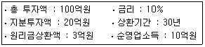
- 2
- 3
- 5
- 10
- 20
(정답률: 50%)
7. 주택시장에 대한 설명 중 가장 옳은 것은?
- 물리적 주택시장은 완전경쟁을 전제로 하는 이론이나 모형으로 분석이 용이하다.
- 주택이란 이질성이 강한 제품이므로 용도적으로 동질화된 상품으로 분석해서는 안된다.
- 주택시장은 지역적 경향이 강하고, 지역수요에 의존하기 때문에 적정가격 도출이 용이하다.
- 주택시장의 단기공급곡선은 유량개념을, 장기공급곡선은 저량개념을 의미한다.
- 주택시장분석에서 유량의 개념뿐만 아니라 저량의 개념을 파악하는 것은 주택공급이 단기적으로 제한되어 있기 때문이다.
(정답률: 48%)
8. 민감도분석(sensitivity analysis)에 대한 설명으로 옳은 것은?
- 개발예정부동산의 분양가격 또는 임대료, 적정개발규모를 측정하는 것이다.
- 부동산개발사업을 전제로 하여 투자자를 끌어들일 수 있는 손익분기점을 측정하는 것이다.
- 개발예정인 부동산의 현황분석, 수요분석, 공급분석 및 경쟁력분석을 대상으로 한다.
- 시장에 공급된 부동산이 시장에서 일정기간 동안 소비되는 비율을 조사하여 해당 부동산시장의 추세를 파악하는 것이다.
- 투자효과를 분석하는 모형의 투입요소가 변화함에 따라 그 결과치가 어떠한 영향을 받는가를 분석하는 것이다.
(정답률: 44%)
9. 부동산광고에 대한 설명 중 가장 적절하지 않은 것은?
- 부동산광고는 구매자뿐만 아니라 판매자도 대상으로 하는 양면성이 있다.
- 실용적이며 장식적인 조그만 물건을 광고매체로 이용하는 것을 노벨티(novelty)광고라 한다.
- 부동산광고의 내용이 사회적 부당성을 갖는 경우에 규제를 받게 된다.
- 광고주가 존재하지 않는 부동산광고가 많다.
- 부동산광고는 부동산마케팅활동을 수행하기 위한 수단 중의 하나이다.
(정답률: 54%)
10. 다음과 같이 주어진 조건하에서 개발정보의 현재가치는 얼마인가? (단, 제시된 가격은 개발정보의 실현여부에 의해 발생하는 가격차이만을 반영하였음)
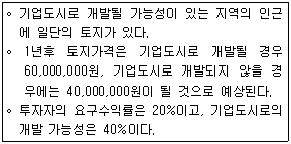
- 6,700,000원
- 10,000,000원
- 13,000,000원
- 17,000,000원
- 20,000,000원
(정답률: 34%)
11. 정부의 임대주택정책에 대한 설명 중 가장 적절하지 않은 것은? (단, 규제임대료가 시장균형임대료보다 낮다고 가정한다)
- 임대료규제정책은 임대료에 대한 이중가격을 형성할 수 있다.
- 임대료규제는 장기적으로 임대주택의 공급량을 증가시킨다.
- 임대료보조정책은 저소득층의 효용을 증대시키고, 저가임대주택의 양을 증가시킨다.
- 임대료규제는 민간임대주택시장에서 장기적으로 공급이 줄어 주택부족현상을 야기할 수 있다.
- 임대료규제는 임대부동산의 질적 저하를 초래할 수 있다.
(정답률: 40%)
12. 부동산마케팅에 대한 설명 중 가장 적절하지 않은 것은?
- 시장세분화(market segmentation)란 부동산상품의 소비자를 유사한 특성의 소집단으로 구분하는 것이다.
- 부동산마케팅은 부동산에 대한 소비자 및 고객의 태도와 행동을 형성ㆍ유지ㆍ변경하게 만드는 제반활동이다.
- 부동산마케팅은 부동산시장이 구매자주도시장(buyer's market)에서 공급자주도시장(seller's market)으로 전환됨에 따라 더욱 중요하게 되었다.
- 부동산마케팅을 수행하기 위한 주요 수단으로 제품 (product), 촉진(promotion), 유통(place), 가격(price) 등의 마케팅믹스(marketing mix)가 있다.
- 부동산마케팅을 효과적으로 수행하기 위해서는 마케팅 환경을 잘 고려해야 한다.
(정답률: 41%)
13. 부동산투자의 위험과 수익, 포트폴리오이론에 대한 설명 중 가장 적절하지 않은 것은?
- 위험을 처리하는 방법 중 위험조정할인율법은 위험한 투자일수록 낮은 할인율을 적용한다.
- 포트폴리오에 편입되는 투자안의 수를 늘리면 늘릴수록 비체계적인 위험이 감소되는 것을 포트폴리오효과라고 한다.
- 투자자의 요구수익률은 위험이 증대됨에 따라 아울러 상승한다.
- 포트폴리오 구성자산들의 수익률분포가 완전한 음의 상관관계(-1)에 있을 경우, 자산구성비율을 조정하면 비체계적 위험을 0까지 줄일 수 있다.
- 요구수익률에는 시간에 대한 비용과 위험에 대한 비용이 포함되어 있다.
(정답률: 33%)
14. 부동산관련제도 및 토지이용규제와 관련된 법률적 근거가 되는 법령을 서로 연결한 것 중 틀린 것은?
- 최저주거기준의 설정 - 도시 및 주거환경정비법
- 개발부담금제 - 개발이익환수에 관한 법률
- 지정지역(투기지역)의 지정 - 소득세법
- 투기과열지구의 지정 - 주택법
- 표준주택가격의 공시 - 부동산가격공시 및 감정평가에 관한 법률
(정답률: 26%)
15. 부동산가격 및 부동산시장의 특성에 관한 설명 중 가장 적절하지 않은 것은?
- 부동산가격은 수요와 공급에 의해 결정되고, 그 가격이 다시 수요와 공급에 영향을 준다.
- 부동산가격은 각각의 권리마다 개별적으로 형성되지 않는다.
- 부동산가격은 가격형성요인들간의 상호작용과정속에서 형성된다.
- 부동산시장은 수요와 공급의 조절이 어려워 단기적으로 가격왜곡이 발생할 가능성이 높다.
- 부동산가격은 불완전시장에서 형성되고, 거래당사자의 개인적인 동기나 특수한 사정이 개입되기 쉽다.
(정답률: 39%)
16. 어느 지역을 주택투기지역으로 지정할 것이라는 소문이 시장에 알려지자 해당지역 주택시장이 급격하게 냉각되었다. 이러한 현상을 가장 적절하게 설명할 수 있는 시장이론은?
- 지대이론
- 포트폴리오이론
- 거미집이론
- 효율적시장이론
- 중심지이론
(정답률: 34%)
17. 아래의 그림을 보고 허프(Huff)의 상권분석모형을 이용하여 신규할인 매장의 이용객 수를 추정하시오. (단, 공간(거리)마찰계수는 2로 가정한다)
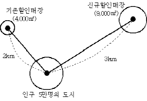
- 20,000명
- 25,000명
- 30,000명
- 34,000명
- 40,000명
(정답률: 35%)
18. 부동산의 특성과 현상을 연결한 것이다. 가장 적절하지 않게 연결된 것은?
- 부동성 - 국지적 시장을 형성하는 경향이 있다.
- 내구성 - 재고시장형성에 영향을 준다.
- 개별성 - 부동산가치추계의 어려움을 유발한다.
- 부증성 - 토지의 조방적 이용을 촉진한다.
- 고가성 - 부동산시장에의 진ㆍ출입을 어렵게 한다.
(정답률: 35%)
19. 부동산시장에 대한 정부의 공적 개입의 필요성 및 규제방법에 관한 설명 중 가장 적절하지 않은 것은?
- 사적 편익보다 사회적 편익이 큰 경우에 정부의 개입이 필요하다.
- 시장기능으로 달성하기 어려운 소득재분배, 공공재의 공급, 경제안정화를 달성하기 위하여 정부의 개입이 필요하다.
- 토지소유자의 입장에서 효율적인 토지이용이라 할지라도 주변토지이용과의 공간적 부조화가 생길 수 있기 때문에 정부의 개입이 필요하다.
- 지역지구제의 목적은 토지이용에 수반되는 정(+)의 외부효과를 제거하거나 감소시키는데 있다.
- 부동산시장은 정보의 비대칭성으로 인해 시장기구의 효율성이 달성되지 못하기 때문에 정부의 개입이 필요하다.
(정답률: 39%)
20. 정부에서 주택시장을 안정시키기 위해 주택의 매도인(공급자)에게 양도소득세를 중과하기로 했다. 만약 주택수요의 가격탄력성이 비탄력적이고, 공급의 가격탄력성이 탄력적이라고 할 때 주택시장에 미치는 영향을 가장 적절하게 설명한 것은? (단, 다른 조건은 일정하다고 가정한다)
- 양도소득세납부 후 매도인(공급자)이 실제로 받는 대금은 양도소득세가 중과되기 전보다 항상 높아질 것이다.
- 양도소득세가 중과되기 전보다 중과 후 주택거래량이 늘어날 것이다.
- 양도소득세의 중과 후에 매수인(수요자)이 지불하는 가격은 양도소득세가 중과되기 전보다 낮아진다.
- 양도소득세의 중과효과는 매도인(공급자)보다 매수인(수요자)에게 더 크게 나타날 것이다.
- 매도인(공급자)은 가격변화에 민감하게 반응하지 않는 반면, 매수인(수요자)은 매우 민감하게 반응할 것이다.
(정답률: 32%)
21. 부동산권리분석에 대한 설명 중 틀린 것은?
- 권리분석시 대상을 가능한한 축소하여 신속하고 효율적으로 수행하여야 한다.
- 부동산권리분석은 사익과 함께 사회성과 공공성이 강조되는 성격을 지닌다.
- 에스크로우(escrow)제도는 부동산거래의 안전성을 제고하기 위해 미국에서 보편화된 제도로서 부동산거래계약의 이행행위를 대행하는 부동산업의 한 종류이다.
- 부동산권리분석이란 소유권 등의 내용이 어떻게 이루어지고 있는가를 명확히 인식하는 일련의 활동이다.
- 부동산권리분석은 비권력적 행위이다.
(정답률: 28%)
22. 부동산가격의 제원칙에 대한 설명 중 틀린 것은?
- 수익배분의 원칙은 토지잔여법의 성립근거가 된다.
- 변동의 원칙은 감정평가시 가격시점과 관련이 있다.
- 균형의 원칙은 기능적 감가와 관련이 있고, 적합의 원칙은 경제적 감가와 관련이 있다.
- 적합의 원칙은 내부구성요소간의 결합이 적합해야 최유효이용이 된다는 점에서 최유효이용원칙과 관련성이 깊다.
- 기여의 원칙은 인근토지를 매수ㆍ합필하거나 기존건물을 증축하는 경우, 그 추가투자의 적부를 결정하는데 유용한 원칙이다.
(정답률: 27%)
23. 부동산투자분석의 필요성에 대한 설명 중 가장 적절하지 않은 것은?
- 부동산은 다른 자산에 비하여 유동성이 낮은 자산으로 사업추진에 있어 자금조달능력의 사전검증을 위해 투자분석이 필요하다.
- 투자대상건물은 시간경과와 더불어 노후화되므로 감가상각으로 인한 위험의 최소화를 위해 투자분석이 필요하다.
- 부동산의 수요와 공급, 비용, 가격 등에 관한 정보가 불확실하고 유용하지 못한 경우가 많기 때문에 투자분석이필요하다.
- 부동산시장에서 발생하는 체계적인 위험을 제거하기 위해 투자분석이 필요하다.
- 공법상 토지이용규제ㆍ건축규제ㆍ환경규제 등 여러가지 제약요인이 많아 이러한 법률적 위험에 대한 투자분석이 필요하다.
(정답률: 40%)
24. 다음과 같이 20억원으로 주택을 구입하여 임대주택사업을 한다고 가정하자. (A)와 (B)의 투자대안에 대한 각각의 자기자본수익률을 구하시오.
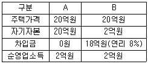
- A = 10%, B = 27%
- A = 10%, B = 28%
- A = 10%, B = 29%
- A = 12%, B = 27%
- A = 12%, B = 28%
(정답률: 35%)
25. 부동산활동의 성격 및 특성에 관한 설명 중 가장 적절하지 않은 것은?
- 부동산활동은 토지 등을 대상으로 의사를 결정하고 실행에 옮기는 관리적 측면의 행위이다.
- 부동산활동은 윤리성이 강조된다.
- 부동산활동은 과학성과 기술성이 요구된다.
- 부동산활동은 높은 전문성이 요구된다.
- 부동산활동은 수익성보다 공익성을 중시한다.
(정답률: 39%)
26. 부동산투자분석기법에 대한 설명 중 옳은 것은?
- 일시불의 내가계수, 연금의 내가계수, 저당상수에 관한 공식은 미래가치를 구하기 위한 공식이다.
- 순현가법이란 보유기간 동안 기대되는 세후소득의 현재가치 합과 투자비용으로 지출한 지분의 현재가치 합을 비교하는 방법이다.
- 일정기간 후에 1원을 만들기 위해서 적립해야 할 액수를 나타내는 자본환원계수는 연금의 내가계수이고, 역수는 저당상수이다.
- 잔금비율은 저당대출액에 대한 상환된 원리금의 비율을 말하며, 이자율ㆍ만기ㆍ남은 저당기간의 함수이다.
- 할인현금수지분석법은 예상되는 현금유입의 현가와 현금유출의 현가를 서로 비교하여 투자하는 방법으로 승수법과 수익률법이 있다.
(정답률: 16%)
27. 부동산신탁의 장ㆍ단점에 대한 설명 중 가장 적절하지 않은 것은?
- 부동산신탁개발은 사업을 집행함에 있어 공공성을 전제로 하기 때문에 사업선정에 제한이 있다.
- 토지소유자인 위탁자는 신탁수익권을 양도할 수 있어 유동성을 확보할 수 있다.
- 신탁회사의 전문성을 활용함으로써 이해관계자들에 대한안전성과 신뢰성의 제고에 도움이 된다.
- 수탁자는 권리ㆍ의무의 주체가 될 수 있는 권리능력과 유효한 법률행위를 할 수 있는 행위능력을 가져야 한다.
- 신탁설정 후에는 토지소유자의 상속이 사업의 진행에 직접적으로 영향을 미치지 않는다.
(정답률: 18%)
28. 부동산감정평가에 대한 설명 중 가장 옳은 것은?
- 거래사례를 유사지역에서 구한 경우에는 지역요인을 비교해야 하지만, 인근지역에서 구한 경우에는 지역요인 비교는 필요하지 않다.
- 「감정평가에 관한 규칙」에서는 가격조사가 가능한 경우라 하더라도 소급하여 평가할 수 없도록 하고 있다.
- 대로변에 위치한 1필지의 토지는 전ㆍ후면으로 가치를 달리하더라도 이를 구분하여 평가할 수 없다.
- 가격시점은 미리 정해진 경우를 제외하고는 감정평가서 작성을 완료한 날짜로 한다.
- 시산가격의 조정이란 감정평가 3방식에 의한 가격을 산술평균하는 것을 말한다.
(정답률: 23%)
29. 어떤 사람이 주택을 구입하기 위하여 은행으로부터 24,000,000원을 연이자율 5%, 10년간, 매월상환조건으로 대출받았다. 원금균등분할상환 조건일 경우, 첫 회에 상환해야 할 원금과 이자의 합계는 얼마인가?
- 100,000원
- 200,000원
- 240,000원
- 300,000원
- 350,000원
(정답률: 30%)
30. 주택저당채권(MBS)의 발행효과에 대한 설명 중 틀린 것은?
- 주택수요자에게 안정적으로 장기대출을 해줄 가능성이 증가한다.
- 금융기관은 보유하고 있는 주택담보대출채권을 유동화하여 자금을 조달할 수 있다.
- 채권투자자는 안정적인 장기투자를 할 수 있는 기회를 가진다.
- 정부는 주택저당채권을 발행하여 단기적으로 주택가격을 하락시킬 수 있다.
- 주택금융자금의 수급불균형을 해소할 수 있다.
(정답률: 45%)
31. 부동산중개에 대한 일반적인 설명 중 틀린 것은?
- 부동산중개계약이란 일방은 중개서비스를 제공하기로 하고, 상대방은 그에 대한 보수의 지급을 약속하는 합의이다.
- 부동산상품의 개별성으로 인해 중개활동에는 구체적으로 대상물건을 확인하기 위한 임장활동을 필요로 한다.
- 순가중개위임계약(net listing)은 부동산거래가격의 조작 및 투기를 조장하는 등 거래질서의 문란을 초래할 가능성이 있다.
- 부동산중개업의 구성요소인 중개업자, 중개의뢰인, 그리고 중개대상물 등은 서로 독립하여 존재하는 것이 아니라 상호의존적인 불가분의 관계를 가지고 있다.
- 공동중개위임계약(multiple listing)은 매도자가 대상부동산을 여러 중개업자에게 매도의뢰한 형태로서 중개수수료는 가장 먼저 매매를 성사시킨 중개업자에게 지불하는 것이다.
(정답률: 27%)
32. 부동산관리에 관한 설명 중 가장 적절하지 않은 것은?
- 자산관리란 소유주나 기업의 부를 극대화하기 위하여 해당부동산의 가치를 증진시킬 수 있는 다양한 방법을 모색하는 것이다.
- 순임대차(net lease)는 임차인의 총수입 중에서 일정비율을 임대료로 지불하는 방법을 말한다.
- 시설관리는 각종 부동산시설을 운영하고 유지하는 것으로 시설사용자나 기업의 요구에 부응하는 정도의 소극적 관리에 해당한다.
- 위탁관리는 건물관리의 전문성을 통하여 노후화의 최소화 및 효율적 관리가 가능하여 대형건물의 관리에 유용한 방식이다.
- 혼합관리는 자가관리가 곤란한 부분만 선별하여 위탁할 수 있는 장점이 있는데, 경영관리는 자가관리로 하고, 시설관리는 위탁관리로 하는 경우가 있다.
(정답률: 24%)
33. 다음 중 감가수정방법이 아닌 것은?
- 정액법
- 상환기금법
- 정률법
- 관찰감가법
- 잔여법
(정답률: 26%)
34. A부동산이 100% 임대될 경우, 연간예상총소득이 50,000,000원이고, 운영경비가 유효총소득의 35%를 차지하는 경우 평균 공실률을 감안한 A부동산의 수익가격은 얼마인가? (단, 인근지역의 평균공실률은 5%이고, 환원이율은 10%라고 한다.)
- 308,750,000원
- 350,000,000원
- 408,750,000원
- 475,000,000원
- 500,000,000원
(정답률: 21%)
35. 다음 용어설명 중 가장 적절하지 않은 것은?
- 「후보지」는 부동산의 용도적 지역이 상호간에 전환되고 있는 지역의 토지를 말한다.
- 「지역권」은 자기 토지의 편익을 위해 타인의 토지위에 설정하는 권리이다.
- 「나지」는 지목이 대로 설정된 토지이다.
- 「필지」는 하나의 지번을 가진 토지로서 등기의 한 단위를 의미한다.
- 「맹지」는 도로와 접하고 있지 않는 구획 내부의 토지를 의미한다.
(정답률: 33%)
36. 다음은 민간금융기관의 CD(양도성예금증서)연동주택담보대출과 한국주택금융공사 모기지론의 대출조건이다. 이에 대한 설명으로 가장 적절한 것은? (단, 대출금액은 동일하다고 가정한다)
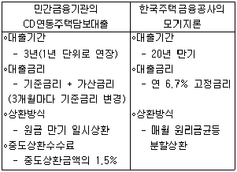
- 모든 대출조건이 같고 단지 금리변동 여부의 조건만 다른 경우, CD연동주택담보대출의 대출금리가 모기지론의 대출금리보다 항상 높은 편이다.
- 통상적으로 CD연동주택담보대출의 월상환액이 모기지론의 월상환액보다 큰 편이다.
- 오랫동안 금리가 지속적으로 상승하더라도 CD연동주택담보대출을 이용하는 것이 유리할 것이다.
- 모기지론의 경우, 월상환액 중에서 원금이 차지하는 비중이 시간이 갈수록 줄어든다.
- CD연동주택담보대출의 차입자는 모기지론 차입자에 비해서 금리변동위험이 높은 편이다.
(정답률: 29%)
37. A지역의 중형주택임대료가 평균 15% 인상됨에 따라 중형주택에 대한 임대수요가 30% 감소하였다면, 중형주택 임대수요의 가격탄력성은 얼마인가?
- 0.5
- 1.0
- 1.5
- 2.0
- 2.5
(정답률: 35%)
38. 임료평가에 관한 설명 중 틀린 것은?
- 임료평가방법으로는 임대사례비교법, 적산법, 수익환원법이 있다.
- 실질임료는 순임료와 필요제경비로 구성된다.
- 실질임료는 각 지불기간에 지불되는 지불임료와 예금적 성격을 지닌 보증금운용이익 등으로 구성된다.
- 일반적으로 감정평가에서 구해야 할 임료는 실질임료이다.
- 계속임료 평가방법으로 차액배분법, 이율법, 슬라이드(slide)법, 임대사례비교법 등이 있다.
(정답률: 16%)
39. 다음과 같은 특징을 지닌 기업이 입지할 도시를 선정하려고 한다. 어떤 입지유형의 도시가 적당한가?(순서대로 (ㄱ), (ㄴ))
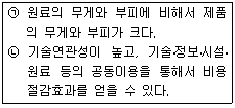
- 원료지향형, 노동지향형
- 시장지향형, 집적지향형
- 노동지향형, 집적지향형
- 시장지향형, 노동지향형
- 원료지향형, 집적지향형
(정답률: 40%)
40. 주택의 여과효과(filtering effect)에 관한 설명 중 가장 적절하지 않은 것은?
- 주택순환현상이라고도 불리운다.
- 주택의 질적 변화와 가구의 이동관계를 설명한다.
- 소득증가로 저가주택수요가 감소하면 하향여과(filtering down)과정이 나타난다.
- 안정적인 주택시장에서는 주택여과효과가 긍정적으로 작동하면 주거의 질을 개선하는 효과가 발생한다.
- 안정적인 주택시장에서는 주택여과효과가 긍정적으로 작동하면 주택공급량의 증가에도 기여하게 된다.
(정답률: 43%)
2과목: 민법 및 민사특별법
41. 계약성립의 요소로서 청약과 승낙의 의사표시에 대한 설명으로 틀린 것은?
- 청약은 구체적ㆍ확정적 의사표시이어야 한다.
- 청약자가 청약을 할 때에는 청약과 동시에 승낙기간을 정하여야 한다.
- 청약은 불특정 다수인에 대하여 할 수 있으나, 승낙은 반드시 청약자에 대하여 하여야 한다.
- 청약에 대하여 조건을 붙여서 승낙을 한 경우, 청약의 거절과 동시에 새로 청약한 것으로 본다.
- 교차청약이 성립하기 위해서는 두 개의 청약이 서로 내용상 합치하여야 한다.
(정답률: 26%)
42. 담보물권의 공통된 성질에 관한 설명으로 옳은 것은?
- 담보물권은 부종성을 가지므로 타인명의의 저당권설정은 무효가 원칙이다.
- 유치권에는 물상대위성이 없는 결과 수반성도 없다.
- 불가분성은 공동저당의 일괄경매에서만 그 예외가 인정된다.
- 물상대위성은 명문규정이 있는 저당권에서만 인정된다.
- 부종성의 완화는 법정담보물권에서 현저하다.
(정답률: 19%)
43. 甲의 대리인 乙이 丙소유의 부동산을 매수하는 계약을 체결하였다. 다음 설명 중 옳은 것은?
- 乙의 기망행위로 계약이 체결되었지만 甲이 그 사실을 모르는 경우에 丙은 매매계약을 취소할 수 없다.
- 乙이 甲을 위한 것임을 표시하지 않은 경우라도 매매계약은 특별한 사정이 없는 한 甲을 위한 것으로 본다.
- 乙이 甲의 위임장을 제시하고 계약서에 乙의 이름만을 기재한 경우, 원칙적으로 甲을 대리하여 계약을 체결한 것으로 볼 수 없다.
- 乙의 계약체결이 대리권소멸 후에 이루어진 경우, 丙의 선의만으로 대리권소멸 후의 표현대리가 성립한다.
- 乙이 공법상의 행위에 관한 대리권만을 갖고 있는 경우, 권한을 넘은 표현대리가 문제된다.
(정답률: 19%)
44. 특별한 사정이 없는 한 타주점유자인 경우를 모두 고른 것은?
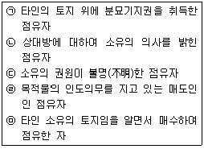
- (ㄱ), (ㄹ)
- (ㄴ), (ㄹ)
- (ㄱ), (ㄴ), (ㄷ)
- (ㄷ), (ㄹ), (ㅁ)
- (ㄱ), (ㄷ), (ㄹ), (ㅁ)
(정답률: 19%)
45. 대지 위에 건물을 소유하고 있는 甲은 그 대지에 대하여 乙에게 저당권을 설정해 준 다음, 건물을 丙에게 매도하여 이전등기를 해주었다. 그 후 乙의 저당권실행으로 대지가 丁에게 매각되었다. 이 경우 丙의 지위에 관한 설명으로 판례의 태도에 부합하는 것은?
- 丙은 대지 위에 아무런 권리를 갖지 못한다.
- 丙은 건물의 소유권을 이전 받는 즉시 관습상 법정지상권을 취득하고, 이를 계속하여 丁에게 대항할 수 있다.
- 丙은 乙의 저당권실행에 의해 법정지상권(민법 제366조)을 취득한다.
- 丙은 관습상 법정지상권과 저당권실행에 의한 법정지상권(민법 제366조)을 동시에 주장할 수 있다.
- 丙은 지상권을 취득하지 못하지만 丁의 건물철거청구에는 대항할 수 있다.
(정답률: 19%)
46. 반사회적 법률행위에 관한 설명으로 옳은 것은?
- 반사회적 법률행위의 무효는 선의의 제3자에게 대항하지 못한다.
- 첩(妾)계약의 대가로 아파트 소유권을 이전하여 주었다면 부당이득을 이유로 그 반환을 청구할 수 있다.
- 반사회적 법률행위는 당사자가 무효인 줄 알고 추인하 면 새로운 법률행위로서 유효하게 된다.
- 명의수탁자가 신탁재산을 처분하는 경우에는 그 매수인이 수탁자의 배임행위에 적극 가담하더라도 그 처분행위는 유효하다.
- 강제집행을 면할 목적으로 부동산에 허위의 근저당권설정등기를 경료하는 행위는 특별한 사정이 없는 한 반사회적 법률행위에 해당되지 않는다.
(정답률: 21%)
47. 매도인은 자기 소유의 X토지에 대하여 매수인과 매매계약을 체결하였으나 X토지의 지번 등에 착오를 일으켜 Y토지에 관하여 매수인 명의로 이전등기를 해 주었다. 다음 설명 중 틀린 것은?
- X토지에 관하여 매매계약이 성립한다.
- Y토지에 관하여 경료된 이전등기는 무효이다.
- Y토지가 매수인으로부터 제3자에게 적법하게 양도되어도 제3자는 유효하게 소유권을 취득할 수 없다.
- 매도인은 착오를 이유로 X토지에 대한 계약을 취소할 수 있다.
- 매수인은 X토지에 관하여 등기의 이전을 청구할 수 있다.
(정답률: 28%)
48. 다음 중 옳은 사항을 고른 것은?
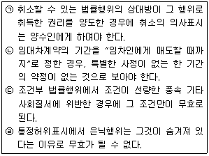
- (ㄱ), (ㄴ), (ㄷ)
- (ㄱ), (ㄷ)
- (ㄴ), (ㄷ), (ㄹ)
- (ㄴ), (ㄹ)
- 정답 없음
(정답률: 29%)
49. 매도인의 담보책임을 원인으로 하여 매수인에게 대금감액청구권과 손해배상청구권이 동시에 인정되는 것은?
- 甲이 乙로부터 토지 100평을 매수하였는데 그 중 10평이 丙의 소유로 밝혀져 소유권이전이 불가능하게 되었고, 甲이 그 사실을 알지 못한 경우
- 甲이 乙 소유의 토지 위에 지상권이 설정된 사실을 모르고 당해 토지를 매수한 경우
- 甲이 乙로부터 매수한 임야가 모두 제3자 丙의 소유로 밝혀져 소유권이전이 불가능하게 되었고, 甲이 그 사실을 알지 못한 경우
- 甲이 경매를 통해 매각받은 토지에 저당권이 설정된 경우
- 甲이 누수 및 균열의 사실을 알지 못한 채 乙로부터 특정 가옥을 매수한 경우
(정답률: 21%)
50. 토지거래허가구역 내의 토지에 관하여 거래허가를 받기 전에 체결한 매매계약에 관한 설명으로 틀린 것은?
- 관할관청의 불허가처분이 있으면 매매계약은 확정적으로 무효가 된다.
- 매매계약이 정지조건부 계약이었는데 그 조건이 허가를 받기 전에 이미 불성취로 확정된 경우에 그 계약은 확정적으로 무효가 된다.
- 매도인은 매매대금의 이행제공이 없었음을 이유로 거래허가와 관련된 매수인의 협력의무이행청구를 거절할 수 있다.
- 당사자는 허가받기 전의 상태에서 상대방의 채무불이행을 이유로 손해배상을 청구하거나 계약을 해제할 수 없다.
- 허가를 받기 전에는 채권적 효력도 발생하지 않으므로 매수인은 매도인에 대하여 토지명도를 청구할 수 없다.
(정답률: 25%)
51. 乙에 대하여 1억 5천만원의 채권을 가진 甲은 乙소유의 X가옥과 물상보증인 소유의 Y토지에 대한 1순위 공동저당권자이고, 丙은 X가옥에, 丁은 Y토지에 대하여 각각 2순위 저당권자이다. 매각대금이 X가옥은 1억원이고, Y토지는 2억원이다. 다음 설명 중 틀린 것은?
- 甲은 Y토지에 대해서만 저당권을 실행할 수도 있다.
- X가옥 및 Y토지에 대하여 동시배당이 행해지면, 甲은 X가옥으로부터 5천만원, Y토지로부터 1억원을 각각 배당받게 된다.
- 甲이 Y토지에 대해서만 저당권을 실행하여 채권전액을 만족 받은 경우, 丁은 甲을 대위하여 X가옥에 대한 저당권을 행사할 수 있다.
- 甲이 X가옥에 대하여 저당권을 실행하면 甲은 丙보다 우선배당을 받는다.
- 甲이 X가옥에 대해 저당권을 실행하여 채권일부를 배당받은 경우, 丙은 甲을 대위하여 Y토지에 대한 저당권을 행사할 수 있다.
(정답률: 17%)
52. 근저당권에 관한 설명으로 틀린 것은?
- 근저당권의 피담보채권이 확정되기 전이라도 그 채권의 일부가 양도되면 그 부분의 근저당권은 양수인에게 승계된다.
- 채권최고액이란 우선변제를 받는 한도액을 의미하고, 책임 한도액을 의미하는 것은 아니다.
- 피담보채권이 확정되기 전에는 채무원인의 변경에 관하여 후순위권리자의 승낙을 요하지 않는다.
- 피담보채권이 확정되면 그 후에 발생하는 채권은 채권최고액에 미치지 못하더라도 더 이상 근저당권에 의하여 담보되지 않는다.
- 피담보채권이 확정되기 전이라도 당사자의 약정으로 근저당권을 소멸시킬 수 있다.
(정답률: 12%)
53. 매매의 일방예약에 관한 설명으로 틀린 것은?
- 예약상의 의무자에 대하여 예약완결의 의사표시를 하면 본계약은 성립한다.
- 부동산물권을 이전하여야 하는 본계약의 예약완결권은 가등기할 수 있다.
- 예약완결권이 가등기된 후 목적부동산이 제3자에게 양도된 경우, 완결권을 행사한 자가 소유권을 취득하기 위해서는 양수인에게 이전등기를 청구하여야 한다.
- 예약의무자는 상당한 기간을 정하여 매매완결 여부의 확답을 최고할 수 있으며, 완결권자로부터 그 기간 내에 확답이 없으면 예약은 그 효력을 상실한다.
- 당사자 사이에 약정이 없는 경우, 예약완결권은 그 예약이 성립한 때로부터 10년 내에 행사되어야 한다.
(정답률: 23%)
54. 甲은 자기소유 아파트에 대해 채권자 A의 강제집행을 면탈할 목적으로 乙과 통정하여 乙명의로 이전등기를 하였다. 그 후 乙은 이 사정을 모르는 丙에게 그 아파트를 매도하여 丙명의로 이전등기가 경료되었다. 다음 설명 중 틀린 것은?
- 甲은 허위표시의 무효를 丙에게 주장할 수 없다.
- 乙은 丙에 대해 원인행위의 무효를 이유로 말소등기를 청구할 수 없다.
- 丙이 취득한 아파트는 A에 의한 강제집행의 대상이 될 수 없다.
- 甲은 乙에게 원인무효를 이유로 부당이득반환을 청구할 수 없다.
- 甲ㆍ乙 사이의 허위표시에 앞선 甲소유 아파트의 가등기권리자는 허위표시에서의 제3자로 볼 수 없다.
(정답률: 27%)
55. 甲과 乙은 그들의 공유토지를 계약금만 받은 상태에서 매수인 丙에게 이전등기를 해 주었다. 다음 설명 중 틀린 것은?
- 잔금지급기일 경과 후 甲과 乙은 丙에 대하여 상당한 기간을 정하여 그 지급을 최고한 후 그 기간 내에 이행이 없으면 계약을 해제할 수 있다.
- 지체기간 중에 지가가 폭등하여도 甲과 乙은 사정변경을 이유로 매매계약을 해제할 수 없다.
- 甲은 乙로부터 대리권을 수여받아 乙을 대리하여 해제의 의사표시를 할 수 있다.
- 계약이 해제되면 甲과 乙은 선의ㆍ악의에 관계없이 원상회복의무가 있다.
- 계약이 해제된 후 丙이 丁에게 위 토지를 양도한 경우, 丁의 지(知)ㆍ부지(不知)를 묻지 않고 甲과 乙은 계약해제를 이유로 등기의 말소를 청구할 수 있다.
(정답률: 16%)
56. 사기에 의한 의사표시에 관한 설명으로 틀린 것은?
- 기망행위란 표의자에게 그릇된 관념을 가지게 하거나 이를 강화ㆍ유지하게 하려는 일체의 행위를 말한다.
- 타인의 과실 있는 기망행위로 인하여 착오에 빠져서 한 의사표시는 사기를 이유로 취소할 수 있다.
- 표의자의 기망행위로 인한 착오는 주관적인 것으로도 족하고, 그 착오는 동기의 착오라도 무방하다.
- 재산상의 손해를 입히려고 하는 의사가 기망행위를 하는 자에게 있을 것을 요하지 않는다.
- 매매의 목적물에 대한 흠이 있음에도 이를 속이고 매도한 경우, 사기에 의한 의사표시와 매도인의 하자담보책임이 경합한다.
(정답률: 9%)
57. 분양약관에 관한 설명으로 옳은 것을 고른 것은?
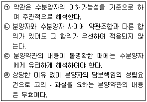
- (ㄱ), (ㄴ)
- (ㄱ), (ㄷ)
- (ㄴ), (ㄷ)
- (ㄷ), (ㄹ)
- (ㄴ), (ㄹ)
(정답률: 24%)
58. 부동산의 공유물분할에 관한 설명으로 틀린 것은?
- 분할은 공유자 각자의 청구에 의하고, 그 분할청구로 공유물분할의 법률관계가 발생한다.
- 등기된 분할금지특약은 채권적 효력을 가질 뿐이므로 그 지분권의 승계인에게는 효력이 미치지 않는다.
- 분할청구가 있으면 공유자 전원은 그 협의에 응할 의무를 진다.
- 공유물분할의 소는 결국 분할방법을 정하기 위한 것이고, 그 상대방은 다른 공유자 전원이어야 한다.
- 공유자 사이의 분할협의가 성립하면 더 이상 공유물분할의 소는 허용되지 않는다.
(정답률: 23%)
59. 甲은 자기소유의 가옥을 乙에게 매도하면서 자신의 丙에대한 차용금채무를 변제하기 위하여 매매대금 1억원을 丙에게 지급하도록 乙과 약정하였다. 그 후 丙은 그 수익의 의사표시를 하였다. 다음 설명 중 옳은 것은?
- 甲ㆍ丙 사이의 채권관계가 소멸하면 甲ㆍ乙 사이의 계약도 당연히 소멸한다.
- 甲과 乙은 합의를 통해 원칙적으로 丙의 권리를 변경할 수 있다.
- 甲ㆍ乙 사이의 매매계약이 허위표시로서 무효가 된 경우, 甲은 그 무효를 이유로 선의인 丙에게 대항하지 못한다.
- 丙은 계약의 해제권이나 해제를 원인으로 한 원상회복청구권을 가진다.
- 乙의 채무불이행이 성립하면 丙은 손해배상을 청구할 수 있다.
(정답률: 18%)
60. 「가등기담보 등에 관한 법률」에 대한 설명으로 틀린 것은?
- 동법은 경매에 관하여 담보가등기권리를 저당권으로 보므로, 가등기담보권의 실행은 경매에 의하여야 한다.
- 동법 소정의 절차를 거치지 아니하고 가등기담보권자가 경료한 소유권이전등기는 원칙적으로 무효이다.
- 양도담보권자가 담보목적부동산에 대하여 동법 소정의 청산절차를 거치지 아니한 채 소유권을 이전한 경우, 선의의 제3자는 소유권을 확정적으로 취득한다.
- 채무자가 자기소유의 건물을 채권담보의 목적으로 채권자에게 양도한 후 채무전액을 변제하였는데, 채권자가 그 건물을 제3자에게 매도하여 이전등기를 해 준 경우, 제3자는 소유권을 취득하지 못한다.
- 부동산을 채권담보의 목적으로 양도한 경우, 특별한 사정이 없는 한 목적물에 대한 사용ㆍ수익권은 담보설정자에게 있다.
(정답률: 15%)
61. 甲은 乙에 대한 금전채권을 담보할 목적으로 乙소유의 X부동산에 가등기를 하였고, 그 후 丙이 그 부동산에 저당권을 취득하였다. 다음 설명 중 옳은 것은?
- 甲은 변제기가 도래한 때에 청산금이 없는 경우에는 즉시 가등기에 기하여 본등기를 청구할 수 있다.
- 甲의 청산금 평가액이 객관적 가액에 미치지 못하면 실행통지로서의 효력이 없다.
- 甲이 청산금의 지급을 지체한 경우에도 乙은 청산기간이 경과한 후에는 이자 등이 포함된 채무액을 변제하고 등기말소를 청구할 수 없다.
- 丙은 청산기간 내에 한하여 그 피담보채권의 변제기가 도래하기 전이라도 X부동산의 경매를 청구할 수 있다.
- 丙의 담보권실행으로 X부동산이 丁에게 매각된 경우에도 甲의 담보가등기권리는 소멸하지 않는다.
(정답률: 22%)
62. 주위토지통행권에 관한 설명으로 틀린 것은?
- 기존 통로가 토지용도에 필요한 통로로서의 기능을 다하지 못하는 경우에도 새로운 통행권이 인정된다.
- 건축법상 도로의 폭 등에 관하여 제한규정이 있다면 반사적 이익으로서 포위된 토지소유자에게 이와 일치하는 통행권이 인정된다.
- 기존의 통로보다 더 편리하다는 이유만으로 다른 곳으로 통행할 권리를 갖는 것은 아니다.
- 통행지 소유자는 통행권자의 허락을 얻어 사실상 통행하고 있는 자에게 손해의 보상을 청구할 수 없다.
- 분할이나 토지의 일부양도로 포위된 토지의 특정승계인의 경우에는 주위토지통행권에 관한 일반원칙에 따라 그 통행권의 범위를 따로 정하여야 한다.
(정답률: 16%)
63. 甲소유의 토지에 대하여 대리권 없는 乙이 상대방 丙에게 자신이 甲의 대리인이라고 하면서 매매계약을 체결하였다. 다음 설명 중 틀린 것은?
- 乙의 대리행위는 원칙적으로 甲에 대해 아무런 효력을 발생하지 않는다.
- 丙은 상당한 기간을 정하여 甲에게 추인 여부를 최고할 수 있고, 甲이 그 기간 내에 확답을 발하지 아니한 때에는 추인을 거절한 것으로 본다.
- 甲은 추인의 의사표시를 乙뿐만 아니라 丙에게 할 수 있다.
- 乙이 대리권을 증명하지 못하고 甲의 추인을 얻지 못한 때에는 乙은 자신의 선택에 따라 丙에게 계약의 이행 또는 손해배상의 책임이 있다.
- 甲을 상속하게 된 乙은 丙으로부터 토지를 매수하여 이전등기를 경료한 丁에 대하여 대리행위의 무효를 이유로 등기말소를 청구할 수 없다.
(정답률: 29%)
64. 불공정한 법률행위에 대한 설명으로 옳은 경우를 고른 것은?
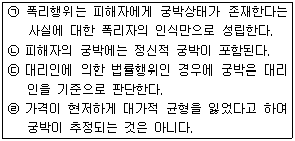
- (ㄴ), (ㄷ)
- (ㄱ), (ㄷ)
- (ㄴ), (ㄹ)
- (ㄴ), (ㄷ), (ㄹ)
- (ㄱ), (ㄴ), (ㄹ)
(정답률: 18%)
65. 전세권에 관한 설명으로 옳은 것은?
- 건물에 대한 전세권의 최단 존속기간은 2년이다.
- 전세권자의 필요비상환청구권은 과실을 수취하지 않을 것을 전제로 한다.
- 전세권과 저당권이 설정되어 있는 부동산에 저당권이 실행되면 그 전세권은 언제나 소멸한다.
- 전세권자의 전전세, 임대의 자유는 전전세 또는 임대하지 아니하였더라면 면할 수 있었던 불가항력적 사유에 대한 책임을 전제로 한다.
- 전세목적물의 일부가 전세권자의 과실로 멸실한 때에 그 부분에 대한 전세권은 소멸함이 원칙이다.
(정답률: 21%)
66. 다음 중 유치권이 성립하는 경우는?
- 전세권이 소멸한 후에 전세권자가 소유자와 합의 없이 목적물을 증축한 경우에 공사대금채권과 그 건물
- 신축건물의 소유권을 도급인에게 귀속시키기로 한 수급인의 공사대금채권과 그 완성물
- 임차목적물의 명도 시에 반환하기로 한 권리금반환채권과 그 임차목적물
- 임대차계약 종료 후 보증금반환채권과 그 임차목적물
- 임차인의 부속물매수청구에 따른 매매대금채권과 그 임차목적물
(정답률: 15%)
67. 乙은 甲으로부터 금전을 차용하면서 자기 소유의 X가옥에 대하여 저당권을 설정해 주었으나, 채무를 이행하지 못하여 위 가옥이 저당권실행으로 丙에게 매각되었다. 다음 설명 중 옳은 것은?
- X가옥에 권리의 하자가 있는 경우, 1차적으로 담보책임을 지는 자는 甲이다.
- 경매절차 자체가 무효인 경우에도 甲 또는 乙의 담보책임이 성립한다.
- X가옥의 부분파손에 대하여 乙은 원칙적으로 담보책임을 지지 않는다.
- X가옥에 선순위 저당권이 설정되어 있었던 경우에 담보책임이 문제된다.
- X가옥의 권리흠결을 알고 있는 甲이 경매신청을 한 때에도 丙은 甲에 대하여 손해배상을 청구할 수 없다.
(정답률: 11%)
68. 임차인 乙은 임대인 甲의 동의 없이 임차목적물을 丙에게 전대하였다. 甲ㆍ乙ㆍ丙의 법률관계에 대한 다음 설명 중 틀린 것은?
- 乙ㆍ丙 사이의 전대차계약은 유효하게 성립하며, 乙은 丙에 대하여 목적물 인도의무와 담보책임을 진다.
- 丙은 乙에 대한 권리로 甲에게 대항하지 못한다.
- 甲은 丙에 대하여 차임청구권은 없지만, 乙의 차임청구권을 대위행사할 수 있다.
- 乙의 채무불이행으로 인하여 임대차계약이 해지된 경우에도 乙은 甲에 대하여 부속물매수청구권이 있다.
- 甲과 乙의 임대차관계가 기간만료나 채무불이행 등으로 소멸하면 丙의 전차권도 소멸함이 원칙이다.
(정답률: 29%)
69. 집합건물에 대한 판례의 태도가 아닌 것은?
- 입주자대표회의가 공동주택의 구분소유자를 대리하여 공용부분 등의 구분소유권에 기초한 방해배제청구권을 행사할 수 있다고 규정한 공동주택관리규약은 유효하다.
- 아파트관리규약에서 입주자의 지위를 승계한 자에 대하여도 체납관리비채권 전체를 행사할 수 있다고 규정하고 있더라도 승계인이 전 입주자의 전유부분에 대한 체납관리비까지 승계하는 것은 아니다.
- 구분소유자가 집합건물의 규약에서 정한 업종준수의무를 위반할 경우, 특별한 사정이 없는 한 단전ㆍ단수 등 제재조치를 할 수 있다고 규정한 규약은 유효하다.
- 관리단은 어떠한 조직행위를 거쳐야 비로소 성립하는 단체가 아니라 구분소유관계가 성립하는 건물이 있는 경우에는 구분소유자 전원을 구성원으로 하여 성립한다.
- 구분건물이 되기 위해서는 구분소유의 객체가 될 수 있는 구조상 및 이용상의 독립성 외에도 그 건물을 구분소유권의 객체로 하려는 소유자의 구분소유의사가 객관적으로 표시된 구분행위가 있어야 한다.
(정답률: 5%)
70. 甲은 자기소유의 토지를 乙에게 매도하면서 계약금을 수령하였다. 다음 설명 중 틀린 것은?
- 甲은 乙이 중도금을 지급하기 전에 수령한 계약금의 배액을 상환하고 계약을 해제할 수 있다.
- 甲의 해제권행사는 계약금의 배액상환의 제공과 함께 하여야 한다.
- 甲이 계약해제의 의사표시와 함께 계약금의 배액을 제공 하였으나 乙이 이를 수령하지 않는 경우에는 공탁을 하여야 유효한 해제권행사가 된다.
- 배액상환을 받은 乙은 계약금 이상의 손해가 발생하였음을 입증하여도 추가로 손해배상을 청구할 수 없다.
- 乙의 귀책사유로 계약이 해제되면 계약금을 위약금으로 한다는 특약이 없는 한, 계약금이 당연히 甲에게 귀속하는 것은 아니다.
(정답률: 16%)
71. 「상가건물임대차보호법」에 관한 설명 중 틀린 것을 모두 고른 것은?
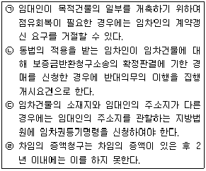
- (ㄱ), (ㄴ)
- (ㄴ), (ㄷ)
- (ㄷ), (ㄹ)
- (ㄱ), (ㄴ), (ㄹ)
- (ㄱ), (ㄴ), (ㄷ), (ㄹ)
(정답률: 7%)
72. 「주택임대차보호법」의 내용에 관한 설명 중 틀린 것은?
- 법인이 임차한 주택을 양수한 자는 동법에 의하여 임대인의 지위를 승계한다.
- 임대차의 목적이 된 주택을 담보목적으로 신탁법에 따라 신탁한 경우에 수탁자는 임대인의 지위를 승계한다.
- 2기의 차임액에 달하도록 차임을 연체한 임차인에게는 묵시적 갱신이 인정되지 않는다.
- 경매목적 부동산이 매각된 경우에는 소멸된 선순위 저당권보다 뒤에 대항력을 갖춘 임차권은 함께 소멸하므로, 임차인은 그 매수인(경락인)에 대하여 임차권의 효력을 주장할 수 없다.
- 임차주택에서 가정공동생활을 하던 사실혼 배우자는 임차인의 사망 후 1월 내에 임대인에게 반대의사를 표시함으로써 임차권을 승계하지 않을 수 있다.
(정답률: 11%)
73. 매도인 甲과 매수인 乙은 X토지를 1억원에 매매하기로 합의하였고, 乙은 甲에 대하여 1억원의 대여금채권을 가지고 있다. 다음 설명 중 옳은 것은?
- 甲은 동시이행항변권이 붙은 매매대금채권을 가지고 乙의 대여금채권과 상계할 수 있다.
- 乙이 동시이행항변권을 가지는 경우에도 이행기에 채무를 이행하지 않으면 이행지체에 빠진다.
- 甲이 소유권이전에 필요한 등기서류를 교부하였는데 乙이 그 수령을 거절한 경우, 후에 甲이 재차 이행의 제공 없이 乙에게 대금지급을 청구하면 乙은 그 지급을 거절할 수 있다.
- 甲이 乙을 상대로 대금지급청구의 소를 제기하였고 이에 대하여 乙이 동시이행항변권을 주장하면 법원은 원고패소를 선고하여야 한다.
- 만일 甲이 소유권이전에 관하여 선이행의무를 부담하는 경우, 乙의 채무변제기가 도래하더라도 甲은 동시이행항변권을 행사할 수 없다.
(정답률: 15%)
74. 등기의 추정력에 관한 설명으로 틀린 것은?
- 등기된 권리는 등기명의자에게 있는 것으로 추정된다.
- 소유권보존등기의 명의자가 건물을 신축한 것이 아니더라도 등기의 권리추정력은 인정된다.
- 등기의무자의 사망 전에 그 등기원인이 이미 존재하는 때에는, 사망자 명의의 등기신청에 의해 경료된 등기라도 추정력을 가진다.
- 어느 부동산에 관하여 등기가 경료되어 있는 경우, 특별한 사정이 없는 한 그 원인과 절차에 있어서 적법하게 경료된 것으로 추정된다.
- 전 소유명의자가 실재하지 아니한 경우에 현재의 등기명의자에 대한 소유권은 추정되지 않는다.
(정답률: 21%)
75. 대지와 건물을 동일인이 소유하고 있었으나 적법한 원인에 의하여 그 소유자를 달리한 경우, 관습상 법정지상권이 성립한다. 다음 중 그 적법한 원인이라고 볼 수 있는 것은 몇 개인가?
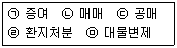
- 1개
- 2개
- 3개
- 4개
- 5개
(정답률: 17%)
76. 「집합건물의 소유 및 관리에 관한 법률」과 관련된 설명 중 틀린 것은?
- 당연공용부분은 등기를 요하지 않으나, 규약공용부분은 등기하여야 한다.
- 매수인이 전유부분에 대한 소유권이전등기만 경료 받고 대지지분에 대하여는 이전등기를 경료 받지 못하였더라도 그 매수인은 매매계약의 효력으로써 건물의 대지를 점유ㆍ사용할 권리를 가진다.
- 구분소유자는 그가 가지는 전유부분과 분리하여 대지사용권을 처분할 수 없으나, 규약으로 달리 정할 수 있다.
- 각 공유자는 공용부분을 그 용도에 따라 사용할 수 있다.
- 공용부분의 변경에 관한 사항은 원칙적으로 통상집회의 결의로써 결정한다.
(정답률: 13%)
77. 甲은 乙소유의 토지를 매입하면서 丙의 명의를 빌리기로 합의하고 乙에게 직접 丙 앞으로 등기를 이전하여 줄 것을 부탁하였다. 이 경우의 법률관계에 관한 설명으로 틀린 것은?
- 甲과 丙 사이의 명의신탁계약은 무효이다.
- 乙로부터 丙으로 이전등기가 경료되더라도 丙으로부터 이전등기를 경료받은 丁은 소유권을 취득하지 못한다.
- 乙로부터 丙으로 이전등기가 경료되더라도 위 토지의 소유권자는 여전히 乙이다.
- 乙로부터 丙으로 이전등기가 경료되더라도 甲은 乙을 대위하여 丙에게 등기말소를 청구하고 다시 乙에게 甲자신 앞으로 등기이전을 청구할 수 있다.
- 만일 甲과 丙이 부부이고 丙 앞으로 이전등기가 경료되었다면, 부동산실권리자 명의등기에 관한 법률상의 일정한 사유가 없는 경우에 한하여 甲과 丙 사이의 명의신탁계약은 유효하다.
(정답률: 17%)
78. 「주택임대차보호법」상의 대항력 및 우선변제권에 관한 설명으로 틀린 것은?
- 확정일자를 입주 및 주민등록일 이전에 갖춘 경우, 우선변제적 효력은 대항력과 마찬가지로 인도와 주민등록을 마친 다음 날을 기준으로 발생한다.
- 경매신청의 등기 전에 동법 소정의 대항력을 갖춘 임차인은 소액보증금 중 일정액을 다른 담보물권자보다 우선하여 변제받을 권리가 있다.
- 대항력을 갖춘 임차주택의 양수인이 임대차가 종료한 상태에서 임대인의 지위를 승계하는 것에 대하여, 임차인이 이의를 제기한 경우에도 양도인의 임차인에 대한 보증금반환채무는 소멸한다.
- 임차주택의 경매 또는 공매시 임차인이 환가대금으로부터 보증금을 수령하기 위해서는 임차주택을 양수인에게 인도하여야 한다.
- 임차인의 소액보증금 중 일정액의 반환청구권은 조세에 우선한다.
(정답률: 19%)
79. 상린관계에 관한 설명으로 틀린 것은?
- 용수권의 승계에 관하여 관습이 있는 때에는 그 관습에 의한다.
- 인지사용청구권에 대하여는 관습의 우선 적용에 관한 민법의 규정이 없다.
- 소통공사와 관련된 비용부담에 관하여 관습이 있으면 그 관습에 의한다.
- 경계표, 담의 설치에 관하여도 관습이 우선 적용된다.
- 수류변경에 대하여는 관습의 우선 적용에 관한 민법의 규정이 없다.
(정답률: 16%)
80. 물권적 청구권에 관한 설명으로 틀린 것은?
- 지역권 및 저당권에서는 목적물반환청구권이 인정되지 않는다.
- 사기에 의해 물건을 인도한 자는 점유물반환청구권을 행사할 수 없다.
- 점유보조자가 그 물건의 사실적 지배를 가지는 이상 물권적 청구권의 상대방이 된다.
- 매매를 원인으로 소유권이전등기를 경료해 준 자는 불법점유자에 대하여 소유권에 기한 물권적 청구권을 행사하지 못한다.
- 물권적 청구권은 손해배상청구권을 당연히 포함하는 것은 아니다.
(정답률: 26%)